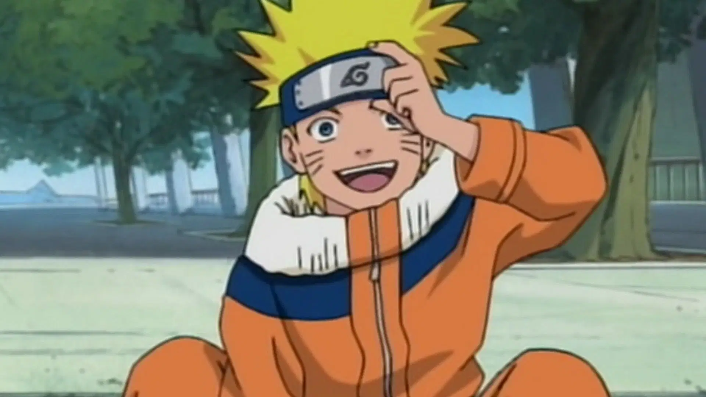
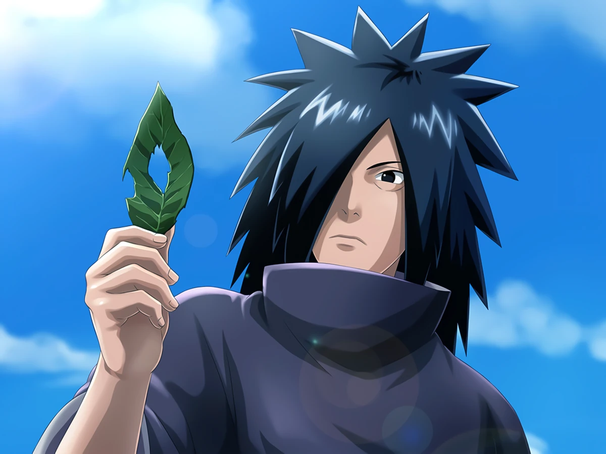
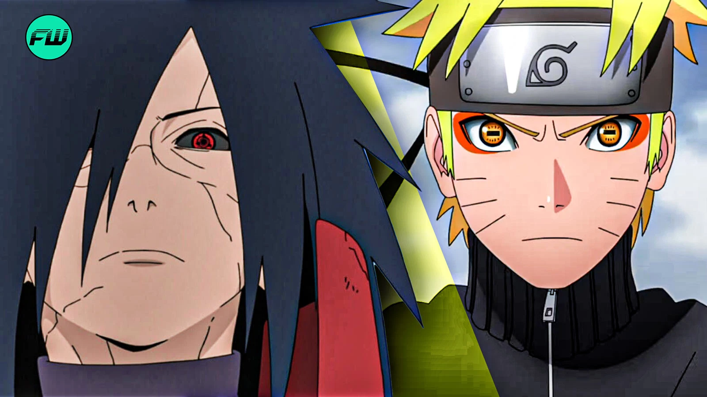
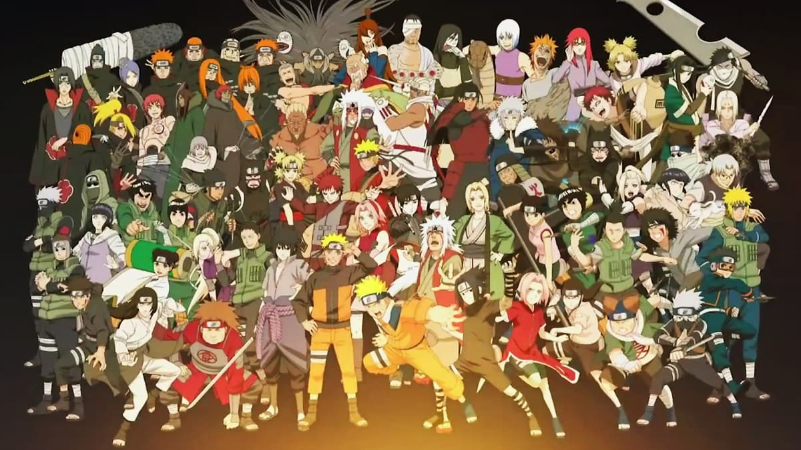

A Journey
Naruto’s Personal Impact on Fans
Global Community United

At its core, Naruto is about perseverance, loneliness, and finding your place in the world. Naruto starts as a rejected kid, but his determination to be acknowledged inspires millions. Fans connect to characters like Naruto, Sasuke, Hinata, and Rock Lee because they’re flawed but grow stronger through struggle. The series teaches loyalty, forgiveness, and the pain of war — with powerful moments like Pain’s invasion or Jiraiya’s death leaving lasting impact. For many, Naruto wasn’t just a show; it was a source of hope, strength, and community across the world.
Why Madara Stands Out

- Powerful, complex villain shaped by pain and betrayal.
- Believed peace could only be achieved by controlling reality (Infinite Tsukuyomi).
- Lost faith in humanity and chose illusion over real,painful progress.
- Represented what happens when hope dies and ideology replaces empathy.
- His strength and ideology made him terrifying yet deeply understandable.
Naruto vs. Madara: Ideological Clash

- Madara: Peace through illusion, no more conflict, but also no more freedom.
- Naruto: Peace through understanding, real bonds, and painful growth.
- Naruto chooses empathy, connection, and never giving up — even when the world rejects him.
- Their conflict symbolizes hope vs. despair, reality vs. illusion, and perseverance vs. control.
How It All Ties Together

Naruto’s ideology directly challenges the mindset that many people secretly struggle with: the feeling that the world is too broken, that people are too cruel, and that trying to change anything is pointless. That’s the same despair that Madara gave into — and it’s something real people wrestle with every day. But then you watch Naruto — a kid hated by his village, alone for most of his life, ridiculed and ignored — who refuses to give up. He doesn’t turn bitter. He doesn’t isolate himself. He pushes forward with a dream to be acknowledged, and he does it with kindness, stubbornness, and empathy. He proves that pain doesn't have to turn you into a villain. It can turn you into a leader.